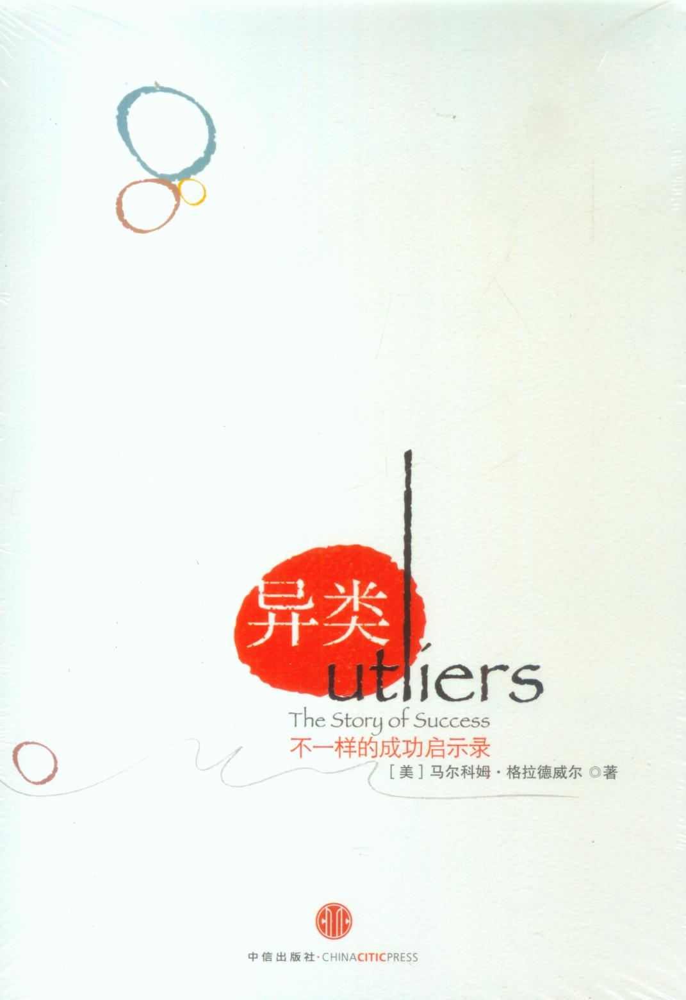

《我的奋斗》 罗永浩 |
|
《我的奋斗》是老罗写的一本极具语言才华的自传，也是他给剽悍的人生一个解释。作者他是一个走路都往下掉个性的胖子。他上幼儿园的时候，就被老师描述成一个“思想特别复杂的孩子”；他在学校里跟愚蠢的制度对抗了九年，成为一个高中没毕业的小混混，然后，一直混到“中国第二著名的英语教师”、百度年度风云人物、牛博网创办人、“老罗培训”学校的校长。 读“老罗式”的幽默，可以感知他的诚恳和热情；读老罗的传奇经历, 可以领悟如何用剽悍的内心创造传奇。 |
|
《美国种族简史》 [美]托马斯・索威尔 |
|
作者在《美国种族简史》一书中，用大量的史实、数字，深入浅出地讲述了各个种族在美国的奋斗史、文化史，包括爱尔兰人、德国人、意大利人、日本人、犹太人、华人、墨西哥人、黑人、波多黎各人等。 众所周知，美国是世界文化的大熔炉。各个种族无论在基因上，还是在文化上都有其本国固有的特质。和其他种族比起来，这些固有的性质也使其在众多种族共存的环境中凸显出来。肯远离祖籍国来到美国的人们，和他们周围的人相比，更具有进取心，在面对困境时更主动，因此凸现出来的种族特点就更加明显。虽然个性或者思考方式很大程度上取决于人们所处的阶级，但是依然呈现出很多通用的成功必备的品质，比如重视教育、勤奋、积极、重视经验的传递，这适用于所有的行业。 |
|
《只有偏执狂才能生存》 安迪・格鲁夫 |
|
本书写到：你的企业迟早会走到一个战略转折点，企业的根基瞬间发生剧变，技术、规则、竞争环境、行业形态……一切的一切都变了。 如果放任自流，战略转折点的破坏力足以葬送一家“好好的”企业。然而，战略转折点并不总是通向灾难，一些企业可能会利用这个时机跃升至新的高度――如果管理者能够敏锐地觉察风向的转变并及时采取正确行动的话。 担任英特尔首席执行官的11年间，安迪・格鲁夫多次被推到战略转折点的悬崖边。最凶险的一次是20世纪80年代中期，日本的存储器厂商几乎把英特尔逼入死角，英特尔最终不得不退出内存芯片的生产，转入另一块比较新的领地，即微处理器的开发。对战略转折点的思考，帮助英特尔在激烈的竞争中得以生存，并成为全球最大的芯片制造商。 |
|
《引爆点》 [美]马尔科姆・格拉德威尔 |
|
我们的世界看上去很坚固，但在《纽约客》怪才格拉德威尔的眼里，只要你找到那个点，轻轻一触，这个世界就会动起来：一位满意而归的顾客能让新开张的餐馆座无虚席，一位涂鸦爱好者能在地铁掀起犯罪浪潮，一位精明小伙传递的信息拉开了美国独立战争的序幕――这个看起来不起眼的点，却是任何人都不能忽视的引爆点。 《引爆点》是一本谈论怎样让产品发起流行潮的专门性著作。书中将产品爆发流行的现象归因为三种模式：个别人物法则、附着力因素及环境威力法则。个别人物法则是圈层营销或者说窄众营销的理论基础。作者在书中详细地指导了我们如何去寻找目标客户中的传播员、内行与推销员――那些有着非凡人际能力的人们。附着力因素解决的是项目应该怎样传递信息的问题。附着力因素首先告诉我们要在诸多卖点中提炼出高质量的信息，并寻找一种简单的信息包装方法，使信息变得不可抗拒。环境威力法则针对的是客户感知与项目期望表达的信息是否高度一致的问题。 |
|
 |
《异类》 [美]马尔科姆・格拉德威尔 |
如果不听听性格比较张扬的格拉德威尔怎么说，绝对不会想到我们对成功的理解还那么原始。正如格拉德威尔在另外一个例子所说的，如果没有机遇和环境的熏陶，即便是世界上智商达到195的人（爱因斯坦的智商是150）也只能做一份年收入6000美元的保安工作。 因此，从《异类》一书中，你能体会到机遇对成功是如此的重要。格拉德威尔为读者指出了成功之路的方向，但怎样把握这份机遇，每个人都需要仔细思考，毕竟，不同人拥有不同的机遇。 |